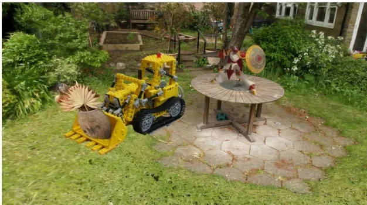
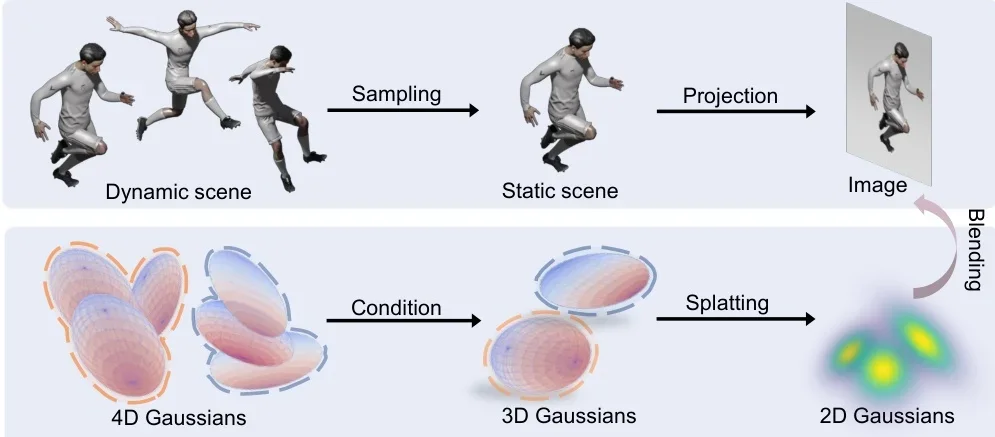
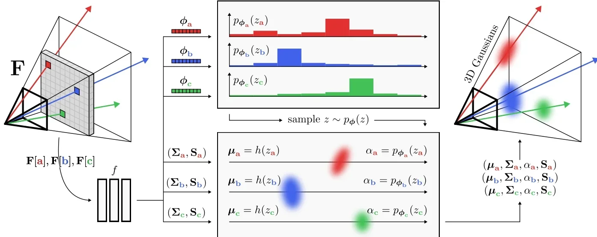

The mental model. Imagine reconstructing a room from 100 photos. NeRF, the 2020 approach, trains a neural network that answers "how dense and what colour is the space at point x?". It renders a pixel by asking that question hundreds of times along the pixel's ray. 3D Gaussian Splatting (3DGS, SIGGRAPH 2023) throws the network away. The scene is a list of a few million Gaussian blobs, each with a position, a shape (a 3×3 covariance), an opacity and a view-dependent colour. To render, you project every blob onto the image as a 2D ellipse, sort the ellipses by depth, and alpha-blend them front to back, exactly like stacking semi-transparent stickers.
Every step is differentiable, so you fit the blobs to the photos by gradient descent. A heuristic adds blobs where the fit is poor and removes useless ones. Training takes minutes and rendering runs in real time.
The field since then splits in two: fix what the blobs do badly (aliasing, memory, surfaces, motion), and stop optimising per scene by having a network predict the blobs in one forward pass.
What you need first
Four ideas from 3D vision and graphics carry the whole topic. If you know ML but not 3D, these are the gaps. Each fits in a few paragraphs.
The task: novel view synthesis
You get a set of photos of a static scene, and for each photo you know where the camera was: its pose (rotation and position, the "extrinsics") and its intrinsics (focal length, principal point). The task is to render the scene from a camera position nobody photographed. Doing that well means recovering something like the 3D scene, because occlusion, parallax and reflections all change with the viewpoint. Quality is scored by rendering the held-out test views and comparing them with the real photos using PSNR (pixel error, in dB, higher is better), SSIM (structural similarity) and LPIPS (a learned perceptual distance, lower is better).
Where the poses come from: structure-from-motion
Phones do not record precise camera poses, so they are estimated with structure-from-motion. In practice that means the COLMAP software (Schönberger & Frahm, CVPR 2016, outside the vault). It detects keypoints in every photo and matches them across photos. It then solves jointly for all camera poses and the 3D positions of the matched points, minimising reprojection error; this joint optimisation is called bundle adjustment. You get the cameras plus a sparse point cloud, the green dots above.
Two consequences matter later. First, 3DGS uses that point cloud as its starting point, so a bad SfM run means a bad reconstruction. Second, SfM is slow, fails with few or textureless views, and recovers the scene only up to an unknown global scale. Removing it is one of the main storylines of 2025–2026. The DUSt3R and VGGT line of networks predicts poses and geometry directly, and 3DGS papers have switched to building on them (numbers in Feed-forward reconstruction).
Volume rendering and alpha compositing
This is the one equation to really understand. Treat the scene as semi-transparent fog with a colour at every point. A pixel's ray passes through a sequence of fog pieces, nearest first. Piece $i$ has colour $c_i$ and opacity $\alpha_i \in [0,1]$, the fraction of light it absorbs and replaces with its own colour. The pixel colour is
$$C \;=\; \sum_{i=1}^{N} c_i\,\alpha_i\,T_i, \qquad T_i \;=\; \prod_{j=1}^{i-1} (1-\alpha_j).$$$T_i$ is the transmittance: the fraction of light from piece $i$ that survives all the pieces in front of it. It starts at 1 and only decreases. The product $w_i = \alpha_i T_i$ is how much piece $i$ contributes to the pixel. This is the painter's "over" operator from 1980s compositing. The order matters: the same pieces in a different order give a different colour. Once $T$ is nearly 0, everything further back is invisible and can be skipped ("early termination").
NeRF and 3DGS use this same equation. They differ in where the $\alpha_i$ come from. In NeRF, a network outputs a density $\sigma$ at sample points along the ray, and $\alpha_i = 1-\exp(-\sigma_i\,\delta_i)$, where $\delta_i$ is the spacing between samples. In 3DGS, $\alpha_i$ is a Gaussian blob's opacity times how close the pixel is to the blob's projected centre. Once that clicks, 3DGS reads as "NeRF's renderer with a different, explicit source of alphas".
NeRF, and why it was slow
NeRF (Mildenhall et al., ECCV 2020, outside the vault) stores the scene inside an MLP: $(\mathbf{x}, \mathbf{d}) \mapsto (\sigma, \mathbf{c})$. Here $\mathbf{x}$ is a 3D point, $\mathbf{d}$ the viewing direction, $\sigma$ the density and $\mathbf{c}$ the colour. Rendering a pixel means sampling maybe 100–200 points along its ray, running the MLP on each, and compositing. A 1-megapixel image needs about $10^8$ network evaluations. Quality was excellent; speed was seconds per frame and training took hours to days. In 2022, Plenoxels and Instant-NGP sped it up by replacing most of the MLP with explicit voxel grids or hash tables of features, but they still marched along rays.
Splatting: an old idea from point-based graphics
"Splatting" means drawing a point as a small footprint (a "splat") instead of a single pixel. The mathematical tool 3DGS borrows is EWA splatting (Zwicker et al., 2001–2002, outside the vault; cited as a foundation by 7 topic papers in the vault). It shows how to project a 3D Gaussian through a camera so that it lands on the image as a 2D Gaussian with a closed-form covariance. It also gives the low-pass filter that keeps splats from aliasing, which comes back in the fidelity sub-area.
| Foundation (outside the vault) | topic papers building on it | What 3DGS takes from it |
|---|---|---|
| 3D Gaussian Splatting (Kerbl et al., ACM TOG / SIGGRAPH 2023) | 1,128 | the method itself |
| 2D Gaussian Splatting (Huang et al., SIGGRAPH 2024) | 104 | flat "surfel" Gaussians for accurate surfaces |
| DreamFusion (ICLR 2023) | 49 | score distillation: optimising 3D with a 2D diffusion model |
| Instant-NGP (SIGGRAPH 2022) | 21 | hash-grid features, reused for compression and deformation |
| Dynamic 3D Gaussians (3DV 2024) | 15 | the first Gaussians tracked through time |
| 3D Gaussian Ray Tracing (SIGGRAPH Asia 2024) | 14 | rendering Gaussians by ray tracing instead of rasterising |
| NeRF (ECCV 2020), Mip-NeRF 360 (CVPR 2022) | 8 each | the task, the compositing equation, the benchmarks |
| EWA Volume Splatting (2001) | 7 | projecting a 3D Gaussian to a 2D Gaussian |
Counts: topic papers listing the work in builds_on (vault.py, "works most built upon ... not in the vault"). NeRF's count is low because, by 2024, papers build on 3DGS rather than on NeRF directly.
The core idea, from first principles
We build 3DGS in six steps. At each step, ask "why this choice and not another?", because most of the follow-up literature is someone answering that question differently.
Step 1. A scene is a cloud of soft blobs
Why blobs and not triangles or voxels? Triangle meshes are what GPUs draw fastest, but you cannot easily optimise a mesh's connectivity by gradient descent: adding a hole or merging two surfaces is a discrete change. Voxel grids are easy to optimise but waste memory on empty space and have a fixed resolution. An unstructured set of soft primitives is the compromise. Each one is independent, so you can add or delete them freely. Each is smooth, so the image changes smoothly as a primitive moves, and gradients flow. And empty space costs nothing because nothing is there.
The Gaussian is chosen for three properties. It has a closed-form projection: a 3D Gaussian seen through an (approximately linear) camera is a 2D Gaussian. It is smooth everywhere. And it has a compact parameterisation: a centre and a covariance.
Step 2. The shape of a blob is its covariance
A 3D Gaussian centred at $\boldsymbol\mu$ is
$$G(\mathbf{x}) \;=\; \exp\!\Big(-\tfrac12 (\mathbf{x}-\boldsymbol\mu)^\top \Sigma^{-1} (\mathbf{x}-\boldsymbol\mu)\Big).$$$\boldsymbol\mu\in\mathbb{R}^3$ is where the blob sits. $\Sigma$ is a 3×3 covariance matrix that sets its shape: how far it extends along each direction and how it is tilted. Note there is no normalising constant. The peak value is 1, and a separate opacity $o\in[0,1]$ scales it. If $\Sigma$ is diagonal with equal entries, the blob is a sphere. With unequal diagonal entries it is an axis-aligned ellipsoid. Off-diagonal entries tilt it. Being able to stretch a blob into a thin needle or a flat pancake (anisotropy) is what lets a few million blobs represent sharp edges and flat walls.
Here is the catch. Not every 3×3 matrix is a valid covariance: it must be symmetric and positive semi-definite (no negative variance in any direction). If you let gradient descent update the nine entries freely, one step can make $\Sigma$ invalid, and then the "ellipsoid" does not exist. 3DGS therefore factorises it:
$$\Sigma = R\,S\,S^\top R^\top,$$where $S=\mathrm{diag}(s_1,s_2,s_3)$ holds the three axis lengths and $R$ is a rotation, stored as a unit quaternion (4 numbers). Any $R$ and $S$ give a valid covariance, so the optimiser can wander freely. In practice the scales are stored as logs and passed through an exponential, which keeps them positive.
Take $s_1=2$, $s_2=0.5$ and $\theta=30^\circ$. Then $\cos\theta=0.866$ and $\sin\theta=0.5$, and
$$\Sigma = R\begin{pmatrix}4&0\\0&0.25\end{pmatrix}R^\top = \begin{pmatrix}4(0.75)+0.25(0.25) & (4-0.25)(0.433)\\ \cdot & 4(0.25)+0.25(0.75)\end{pmatrix} = \begin{pmatrix}3.06 & 1.62\\ 1.62 & 1.19\end{pmatrix}.$$Check: $\det\Sigma = 3.06\cdot1.19-1.62^2 \approx 1.0 = (s_1 s_2)^2$. The determinant is the squared area factor, and it is positive by construction. Set those values on the sliders and you get this matrix.
Step 3. Colour that changes with viewpoint
A shiny surface looks different from different angles, so a blob's colour must depend on the viewing direction $\mathbf d$. 3DGS gives each blob a small function on the sphere of directions, written in spherical harmonics (SH): the Fourier basis of the sphere. Degree 0 is a constant colour, degree 1 adds a linear tilt, and higher degrees add finer angular detail. With degree 3 there are $1+3+5+7=16$ coefficients per colour channel, so 48 numbers per blob. That is most of a blob's memory, as you will see in Compact and fast.
$$\mathbf{c}(\mathbf d) = \sum_{\ell=0}^{3}\sum_{m=-\ell}^{\ell} \mathbf{k}_{\ell m}\, Y_{\ell m}(\mathbf d)$$$Y_{\ell m}$ are the fixed SH basis functions and $\mathbf k_{\ell m}\in\mathbb R^3$ are the learned RGB coefficients. Everything a blob stores is now: position (3), scale (3), rotation (4), opacity (1) and SH (48), 59 floats.
Step 4. Projecting a blob onto the screen
To draw a blob, we need the 2D Gaussian it becomes on the image. A camera applies a rigid transform $W$ (world → camera coordinates), then perspective division, which is non-linear. EWA splatting's trick is to linearise the perspective step around the blob's centre with its Jacobian $J$. A Gaussian pushed through a linear map stays Gaussian, with covariance transformed as $A\Sigma A^\top$, so
$$\Sigma' = J\,W\,\Sigma\,W^\top J^\top, \qquad \Sigma^{2D} = \text{top-left } 2{\times}2 \text{ block of } \Sigma'.$$$W$ rotates the blob into the camera's frame. $J$ is the 2×3 local derivative of "3D point → pixel" at the blob's centre, so it says how much one unit of 3D motion moves you on screen at that depth: things far away shrink. Dropping the third row and column means looking along the optical axis. This is an approximation: for a big blob seen at a wide angle, the true projection is not quite an ellipse. Later work (EVER, Geometry Field Splatting) revisits exactly this approximation.
The Mip-Splatting paper restates the original pipeline and adds a detail you need to know. 3DGS adds a fixed 2D "dilation" to every projected covariance ($\Sigma^{2D}+0.3\,I$, in pixel units) so no splat is smaller than a pixel. Remember that 0.3; it causes the zoom artifacts in Fidelity.
Step 5. Blend, in depth order
For a pixel $\mathbf p$, each projected blob $i$ contributes an alpha
$$\alpha_i(\mathbf p) = o_i \exp\!\Big(-\tfrac12(\mathbf p-\boldsymbol\mu_i^{2D})^\top (\Sigma_i^{2D})^{-1}(\mathbf p-\boldsymbol\mu_i^{2D})\Big),$$where $o_i$ is its learned opacity and $\boldsymbol\mu^{2D}_i$ its projected centre. That is "opacity × how close the pixel is to the blob's centre, in the blob's own metric". Then comes the compositing sum from the prerequisites, over the blobs sorted by depth:
$$C(\mathbf p) = \sum_i \mathbf c_i(\mathbf d)\,\alpha_i(\mathbf p)\prod_{j\lt i}\big(1-\alpha_j(\mathbf p)\big).$$One subtlety explains a lot of later work. 3DGS sorts blobs once per image, by the depth of their centres, not per pixel along each ray. When two blobs overlap in depth, the order can be wrong for some pixels, and it can flip as the camera moves, producing "popping". Rasterisation also ignores that a blob has extent along the ray. These shortcuts are what make it fast, and they are what EVER and the ray-tracing line give up speed to fix.
NeRF
- Scene: implicit, an MLP (or grid + MLP).
- Render: march every ray and query the network at each sample.
- Empty space: still sampled, unless you add acceleration structures.
- Edit: hard; the scene is spread through the network's weights.
- Memory: small (MBs).
3D Gaussian Splatting
- Scene: explicit, a list of millions of primitives.
- Render: project, sort once, alpha-blend; real time.
- Empty space: free; there are no primitives there.
- Edit: select, delete or move primitives directly.
- Memory: large (hundreds of MB per scene).
Step 6. Fitting it: gradient descent plus adaptive density control
Every operation above is differentiable in the blob parameters, so you can render a training view, compare it with the photo, and backpropagate. The loss in the original paper is a mix of L1 and D-SSIM (structural dissimilarity), weighted 0.8 / 0.2 (my recollection). Training runs for about 30k iterations, one random training view per iteration.
Gradient descent alone cannot fix the number of blobs. A Gaussian has local support. As the pixelSplat paper puts it, gradients "vanish if the distance to the correct location exceeds more than a few standard deviations". A region with no blob nearby never attracts one, and one big blob covering detail cannot turn itself into three small ones. So 3DGS interleaves the optimiser with adaptive density control (ADC), run every 100 iterations (my recollection of the original paper). It accumulates the size of each blob's positional gradient in screen space over many views. If that gradient is large, the blob is being pulled hard because it is not explaining its pixels, and:
- if the blob is small (under-reconstruction: missing geometry nearby), it is cloned and the copy moved along the gradient;
- if the blob is large (over-reconstruction: one blob smeared over detail), it is split into two smaller ones (scales divided by 1.6, positions sampled from the original);
- blobs with opacity below 0.005 are pruned; every few thousand iterations all opacities are reset to a small value so that "floaters" have to justify themselves again.
These rules are what 3DGS-MCMC criticises as "carefully engineered cloning and splitting heuristics". They depend on a good SfM initialisation, they make the final blob count (and memory) hard to predict, and they need tuned thresholds. A whole sub-area tries to replace them.
Anatomy of the canonical method
Here is the whole pipeline as the GPU runs it, with the tensors passed between stages. The design goal is that no stage needs anything per-pixel-per-primitive except the final blending, and that blending touches only the blobs overlapping that pixel's tile.
Initialise from SfM points. One Gaussian per COLMAP point, with an isotropic scale set from the distance to its nearest neighbours. Why: a good starting geometry saves the optimiser from hunting for surfaces through empty space. Without it: random initialisation works much worse in the original method. 3DGS-MCMC reports Mip-NeRF 360 PSNR 27.89 for 3DGS from random init vs 29.30 from SfM (in its own evaluation), and closes most of that gap with its sampler (29.72).
Project and cull. Compute $\boldsymbol\mu^{2D}$, $\Sigma^{2D}$ (plus the 0.3 px dilation), depth and view-dependent colour for every Gaussian in parallel; drop those outside the frustum. Why: it is one small, independent computation per primitive, which is ideal for a GPU.
Bin into tiles and sort. The screen is cut into 16×16-pixel tiles. Each Gaussian emits one key per tile its ellipse touches. The key packs tile ID (high bits) and depth (low bits), so one global radix sort yields every tile's list in depth order. Why: sorting once per image instead of once per pixel is the key speed trick. Cost: the ordering is approximate (Step 5), and loose bounding boxes waste work. Speedy-Splat tightens the boxes to the ellipse at the 1/255 alpha threshold and gets 1.81× and 1.99× speed-ups from the two tightening steps alone, with no quality loss.
Blend per pixel. One GPU thread block per tile loads that tile's Gaussians into shared memory, and each thread (pixel) composites front to back until $T\lt 10^{-4}$. Why: memory locality, and early termination makes cost scale with visible, not total, complexity.
Backpropagate and control density. Gradients flow to all parameters, positions included. Every 100 iterations, ADC clones, splits and prunes. Without it: under-reconstructed regions stay empty (try the 1D widget with only Optimise).
What does this buy? The cleanest single source in the vault is the Mip-NeRF 360 table reproduced by LightGaussian, which puts the NeRF-family baselines and 3DGS on the same axes.
3DGS did not win on image quality. On Mip-NeRF 360 it was below Mip-NeRF 360 itself. It won because it moved the field onto rasterisation, the operation GPUs, game engines and web viewers are built around, and because the scene became an explicit list that downstream code can select, deform, simulate and segment. Most of the 1,486 papers in this vault use the second property, not the first.
How the field evolved
The story is easiest to follow as a sequence of complaints about the original method, each answered by a line of work. Dates are submission deadlines, since that is when the work was done.
Aug 2023 → deadlines Sep–Nov 2023 (ICLR'24, CVPR'24): "it works; now make it do everything NeRF did." Within three months of 3DGS appearing, the CVPR'24 crop ported every NeRF extension to Gaussians. Dynamic scenes: Deformable 3DGS, 4DGS. Avatars: GaussianAvatars. Meshes: SuGaR. Language fields: LangSplat. SLAM: SplaTAM. Generation: DreamGaussian. Physics: PhysGaussian. The first problems with the method itself were also named: aliasing (Mip-Splatting) and redundancy (Scaffold-GS). And pixelSplat showed a network could predict Gaussians from two images.
Deadlines Mar–Sep 2024 (ECCV'24, NeurIPS'24, ICLR'25): "it is too big, and the heuristics are fragile." Compression goes from pruning plus codebooks (LightGaussian) to entropy coding with context models (HAC). Density control gets a principled reformulation (3DGS-MCMC). Feed-forward models get cost volumes (MVSplat) and transformer scale (GS-LRM). NoPoSplat drops the need for poses.
Deadlines Nov 2024–May 2025 (CVPR'25, ICCV'25, NeurIPS'25): "real captures are casual, sparse and moving." Monocular video with foundation-model depth and tracks (Shape of Motion, MoSca). Fast motion without a canonical space (FreeTimeGS). Geometry backbones that replace SfM (VGGT). Large generative 3D latents (TRELLIS). And a challenger with no 3D representation at all (LVSM).
Deadlines Sep 2025–Mar 2026 (ICLR'26, CVPR'26, ECCV'26): "predict everything, in one pass, on top of a geometry foundation model." VGGT-style backbones with Gaussian heads (YoNoSplat, WorldMirror, and feed-forward 4D with MoVieS). Moving away from one-Gaussian-per-pixel (GlobalSplat, Off The Grid). Per-scene optimisation keeps going too: training in ~2 minutes (FastGS), learned density control (LeGS), and sort-free stochastic ray tracing (Stochastic RT).
Two numbers make the shift concrete. In the vision venues (CVPR/ECCV/ICCV), the share of topic papers listing the original 3DGS paper in builds_on fell from 94% (165 of 175, 2024) to 78% (2025) and 68% (2026). The field now builds on its own descendants. Meanwhile, VGGT went from 2 topic papers building on it in 2025 to 33 in 2026, overtaking DUSt3R (14 in 2025, 2 in 2026). Geometry foundation models have become the new initialisation.
The lineage graph below is computed from the builds_on relations inside the topic. An arrow A → B means B builds on A. The original 3DGS paper is left out of the graph because nearly everything builds on it. Click a node to open its card.
flowchart LR
subgraph before["earlier work (count: topic papers building on it)"]
ext1(["3D Gaussian Splatting for Real-Time ...<br/>ACM TOG 2023 · 1128"]):::ext
ext2(["FLAME face model<br/>ACM TOG 2017 · 17"]):::ext
ext3(["Dynamic 3D Gaussians<br/>3DV 2024 · 15"]):::ext
ext4(["Segment anything<br/>ICCV 2023 · 13"]):::ext
end
subgraph y2024["2024"]
CVPR20242478["Scaffold-GS<br/>CVPR'24"]
CVPR20240949["4DGS (Wu et al.)<br/>CVPR'24"]
CVPR20242189["Deformable 3DGS<br/>CVPR'24"]
CVPR20241188["GaussianAvatars<br/>CVPR'24"]
ECCV20240557["MVSplat<br/>ECCV'24"]
CVPR20240557["Gaussian Splatting SLAM<br/>CVPR'24"]
CVPR20240858["LangSplat<br/>CVPR'24"]
ECCV20240185["HAC<br/>ECCV'24"]
ECCV20240395["Per-Gaussian Embedding Deformation<br/>ECCV'24"]
CVPR20241427["DrivingGaussian<br/>CVPR'24"]
NEURIPS20243408["FreeSplat<br/>NEURIPS'24"]
end
subgraph y2025["2025"]
ICCV20251589["GUAVA<br/>ICCV'25"]
CVPR20252439["DepthSplat<br/>CVPR'25"]
ICCV20251524["4D Gaussian Splatting SLAM<br/>ICCV'25"]
CVPR20252405["4D LangSplat<br/>CVPR'25"]
end
subgraph y2026["2026"]
ECCV20261520["DLGStream<br/>ECCV'26"]
CVPR20262066["ST4R-Splat<br/>CVPR'26"]
CVPR20263070["Consistent Instance Field<br/>CVPR'26"]
end
ext2 -.-> CVPR20241188
ext2 -.-> ICCV20251589
ext3 -.-> CVPR20263070
ext4 -.-> CVPR20240858
CVPR20240557 --> ICCV20251524
CVPR20240858 --> CVPR20252405
CVPR20240858 --> ECCV20261520
CVPR20240949 --> CVPR20241427
CVPR20240949 --> CVPR20262066
CVPR20240949 --> CVPR20263070
CVPR20240949 --> ECCV20240395
CVPR20241188 --> ICCV20251589
CVPR20242189 --> CVPR20263070
CVPR20242189 --> ECCV20240395
CVPR20242478 --> ECCV20240185
CVPR20242478 --> ECCV20261520
CVPR20252405 --> CVPR20262066
CVPR20252405 --> ECCV20261520
ECCV20240557 --> CVPR20252439
ECCV20240557 --> NEURIPS20243408
classDef ext stroke-dasharray: 4 3
From vault.py lineage --ids-file topic_ids.txt --nodes 18 --roots 4; labels shortened by hand. The graph favours 2024 papers because they have had the most time to be built on. The VGGT-era frontier does not show up here yet; read it in the sub-areas.
The sub-areas
Six lines of work, each with its share of the 1,486 topic papers (title + contribution queries, overlapping, so the shares do not sum to 100%): fixing fidelity (~12%), compact and fast (~16%), surfaces (~12%), dynamics and avatars (~34%), feed-forward reconstruction (~16%, the fastest-growing), and Gaussians as a general 3D substrate (generation, semantics, editing, SLAM, physics, driving; ~47% on a broad query whose precision was not sampled).
1 · Fidelity: aliasing, density control, and the primitive itself
The problem. A trained 3DGS scene looks perfect from the training cameras and breaks in characteristic ways elsewhere. The cleanest case is changing the sampling rate: zooming in or out, or moving the camera closer or further. The optimiser happily makes some Gaussians tinier than a pixel, because the fixed 0.3 px dilation from Step 4 inflates them back to pixel size anyway. Mip-Splatting diagnoses both failure modes. Zoom in, and those degenerate needles are now smaller than the screen-space dilation would make them, so thin structures erode and you see high-frequency artifacts. Zoom out, and every splat is still dilated to at least a pixel, which "spreads radiance in a physically incorrect way", so thin structures turn too bright and thick.
The key insight is signal processing, not deep learning. A camera that sees a region with pixel spacing $\hat T$ (in world units, at that depth) can only constrain frequencies up to the Nyquist limit $1/(2\hat T)$. So no Gaussian should be sharper than the finest training camera that sees it can justify. Mip-Splatting enforces this with a 3D smoothing filter: convolve each Gaussian with an isotropic Gaussian whose variance is set by its maximal sampling rate $\hat\nu_k$. Convolving two Gaussians just adds their covariances, so this is free: $\Sigma_k \leftarrow \Sigma_k + \tfrac{s}{\hat\nu_k^2} I$. It then replaces the dilation with a 2D Mip filter that approximates the true pixel box filter. The consequence is dramatic and easy to measure:
Density control. The second fidelity problem is where Gaussians go. 3DGS-MCMC makes the cleanest conceptual move. It notices that the 3DGS update is almost exactly Stochastic Gradient Langevin Dynamics, an MCMC sampler, minus the noise term. So it treats the Gaussians as samples from a distribution that favours good reconstructions, adds position noise shaped by each Gaussian's own covariance (gated so opaque Gaussians barely move), and replaces clone/split/prune with "relocation": dead Gaussians are teleported onto live ones, with parameters adjusted so the image is unchanged. The count becomes a user-set budget instead of an accident of thresholds. By 2026 the same question gets learned answers. LeGS trains an RL policy per Gaussian, with a reward from how much the rendering error changes when that Gaussian is removed, computed in closed form.
The primitive and the renderer. The third thread questions the Gaussian and the rasteriser themselves. Textured Gaussians give each Gaussian a small texture map, so one primitive can carry more than one colour; at 10% of the Gaussians it holds 26.32 dB on Mip-NeRF 360 vs 25.77 for 3DGS. Jinc kernels treat the kernel as a low-pass filter and derive a closer-to-ideal one. EVER replaces the blobs with constant-density ellipsoids and ray-traces them, so compositing is exact and nothing pops. The cost is large: 36 vs 224 FPS on Mip-NeRF 360 in its note. Stochastic ray tracing attacks that cost. Per sample it picks one Gaussian with probability equal to its blending weight, which gives an unbiased, sort-free estimator. It reaches 28.31 dB on Mip-NeRF 360 in 33 min vs 3DGRT's 28.40 in 69 min.
The fidelity line is converging on an uncomfortable conclusion: the speed of 3DGS came from approximations (one sort per image, affine projection, no extent along the ray) that matter for exactly the cases people now care about. Those are reflections, wide-angle and fisheye cameras, relighting and zoom. I expect a two-tier world: rasterised Gaussians for real-time viewing, and a ray-traced or exact-integration variant of the same primitives for training and for effects. Stochastic estimators look like the most promising bridge.
2 · Compact and fast
The problem is in the 59 floats. A typical outdoor scene ends up with a few million Gaussians, and $3\text{M} \times 59 \times 4$ bytes $\approx$ 0.7 GB. Mip-NeRF 360 scenes average 734 MB in LightGaussian's table and about 1.4 GB for its Bicycle scene. That is too much to stream to a phone or a browser, and many of those Gaussians contribute almost nothing.
The key insight is that the representation is massively redundant in three different ways, and each redundancy calls for a different tool. Too many rows: most Gaussians are nearly transparent or hidden. LightGaussian scores each one by how much it contributes across all training views and prunes the bottom, and Mini-Splatting keeps only Gaussians that are the top contributor to at least one pixel. Too many columns: most Gaussians do not need degree-3 SH. LightGaussian distils SH to degree 2 and vector-quantises the rest; Compact 3DGS replaces per-Gaussian SH with a hash grid queried by position. Correlated neighbours: nearby Gaussians look alike. Scaffold-GS generates Gaussians from a sparse set of anchors with small MLPs (171 MB vs 721 MB on Mip-NeRF 360), and HAC adds an entropy model conditioned on a hash grid, so the anchors themselves are arithmetic-coded. Its note reports over 75× compression vs 3DGS.
The numbers moved fast. LightGaussian gets to 45 MB at 27.13 dB (vs 782 MB, 27.40 for its retrained 3DGS). OMG reaches 4.06 MB at 27.06 dB with 0.43M Gaussians. KISS-GS reports 228× reduction on Mip-NeRF 360 at matched quality, in a deliberately modular "image codec" pipeline. Speed follows from fewer Gaussians. Speedy-Splat renders at 898 vs 134 FPS (with a small PSNR loss, 26.94 vs 27.55), and FastGS trains a Mip-NeRF 360 scene in 1.93 min vs 20.93 min for 3DGS.
Every paper retrains its own 3DGS baseline, so the "3DGS" row on Mip-NeRF 360 varies from 27.21 to 29.30 dB across the notes read for this primer, and from 97 to 224 FPS. Compare each method with the 3DGS row in its own table, never across papers.
3 · Surfaces and geometry
The problem. 3DGS is optimised to make images right, not geometry. A shiny floor can be faked by a cloud of Gaussians floating below it, which reproduce the reflection, and the image loss is perfectly happy. If you want a mesh (for simulation, games, measurement), the Gaussians do not define one. A 3D blob also has no well-defined depth along a ray (where inside the blob is the surface?) and no well-defined normal.
The key insight is to make the primitives agree on a surface: flatten them, align them, then extract. SuGaR did it first. A regulariser pushes Gaussians to be flat, opaque and spread along the surface, then it samples a level set and runs Poisson reconstruction, cutting mesh extraction "from 24+ hours" for SDF methods to 5–10 minutes. 2DGS made flatness the primitive itself (figure above). Then the field split. GS2Mesh ignores the Gaussians' positions entirely. It renders stereo pairs from the trained scene, runs a pretrained stereo network, and fuses the depths, reaching 0.68 mm Chamfer on DTU. Geometry Field Splatting gives surfels a principled stochastic-geometry definition with near-exact rendering, at 0.58 mm.

By 2026 the DTU Chamfer race has reached about 0.46 mm (AmbiSuR, 0.46; GeoSVR, 0.47). The gains now come from diagnosing where photometry is ambiguous rather than from new primitives. AmbiSuR flags primitives whose high-degree SH energy is large: if a Gaussian needs strong view-dependence to fit, its geometry is probably wrong. GeoSVR is worth noticing for another reason: it does this with sparse voxels, not Gaussians, and argues that voxels' sharp boundaries suit geometry better.
The tension here is real and unresolved. Every regulariser that makes Gaussians more surface-like costs some image quality (SuGaR's refined model: 27.27 dB vs 28.69 for vanilla 3DGS in its note), because the volumetric fuzz is what fakes hair, foliage and reflections. My bet is that the winning recipe keeps two populations, surface-bound primitives and free volumetric ones, rather than forcing one primitive to do both.
4 · Time: dynamic scenes and avatars
The problem. Real scenes move. Storing a separate set of Gaussians per frame costs $O(T\cdot N)$ memory and has no notion that it is the same object moving, so it cannot fill in a region occluded in one frame from another frame.
Two templates appeared at once in 2024, and the field still lives between them.
Canonical space + deformation
Keep one set of Gaussians in a "canonical" (rest) pose. A network maps (Gaussian centre, time) to offsets in position, rotation and scale. Deformable 3DGS uses an 8-layer MLP. 4DGS (Wu et al.) uses a factorised HexPlane grid plus a tiny MLP: 82 FPS, 18 MB on D-NeRF. SC-GS drives Gaussians from a few hundred control points by skinning, which makes motion low-dimensional and editable.
Native space-time primitives
Make each primitive itself live in time. 4DGS (Yang et al.) uses true 4D Gaussians over $(x,y,z,t)$ and slices them at the render time (widget below). Spacetime Gaussians give each Gaussian a temporal opacity bump and a polynomial trajectory. FreeTimeGS gives each a lifetime and a velocity, with no canonical space at all.
The slicing idea is the elegant one, so let's see it work. A 4D Gaussian has a 4×4 covariance. Condition it on a time $t$, using the standard Gaussian conditioning formulas, and you get an ordinary 3D Gaussian plus a scalar weight:
$$\boldsymbol\mu_{xyz\mid t} = \boldsymbol\mu_{1:3} + \Sigma_{1:3,4}\,\Sigma_{4,4}^{-1}(t-\mu_t),\qquad \Sigma_{xyz\mid t} = \Sigma_{1:3,1:3} - \Sigma_{1:3,4}\Sigma_{4,4}^{-1}\Sigma_{4,1:3},\qquad p(t)=\mathcal N(t;\mu_t,\Sigma_{4,4}).$$In words: the off-diagonal block $\Sigma_{1:3,4}$, the tilt of the ellipsoid in space-time, acts as a velocity. The slice's centre slides linearly as $t$ changes. The marginal $p(t)$ makes the primitive fade in and out around its time $\mu_t$, and it multiplies the opacity in the compositing sum. In the paper's notation the effective alpha is $p_i(t)\,p_i(u,v\mid t)\,\alpha_i$, and Gaussians with $p(t)\lt 0.05$ are skipped (from its OCR). Motion falls out of geometry; there is no deformation network.

Where it went. Multi-view studio capture is now largely solved at real-time rates. FreeTimeGS reports 33.19 dB on Neural3DV at about 460 FPS. The hard frontier is casual monocular video: one moving phone, so every point is seen from roughly one direction at each instant. That is badly under-constrained, and the 2025 answers import priors. Shape of Motion expresses every Gaussian's motion as a blend of 10 shared rigid motions initialised from noisy 2D tracks and depth. MoSca builds a sparse graph of rigid "scaffold" trajectories and does without known poses. The 2026 step is to drop per-scene optimisation here too. MoVieS predicts per-pixel dynamic Gaussians from a VGGT backbone in 0.93 s instead of 10–45 min. The numbers stay sobering: on DyCheck, mPSNR is still in the 14–19 dB range across these notes.
Avatars are the special case where you know the moving thing's skeleton. GaussianAvatars binds each Gaussian to a triangle of the FLAME face mesh, in that triangle's local frame, so the Gaussians follow the animated mesh. Two years later, LHM produces an animatable full-body Gaussian avatar from a single image in seconds (6.57 s vs 15 min), trained on in-the-wild video. The same shift from optimisation to prediction shows up across this whole topic.
5 · Feed-forward reconstruction: predicting the Gaussians
The problem. Per-scene optimisation needs dozens of posed images and minutes of GPU time per scene, and it learns nothing across scenes. Could a network look at two or a few photos and output the Gaussians directly, in one forward pass?
The key insight is pixel-aligned Gaussians. Do not predict "a set of Gaussians somewhere in space"; that is a hard set-prediction problem. Predict one Gaussian per input pixel, placed along that pixel's ray at a predicted depth. The network becomes an image-to-image model, a U-Net or ViT outputting a few channels per pixel, which deep learning is very good at. 3D structure enters only through the unprojection $\boldsymbol\mu = \mathbf o + d\,\mathbf r$ (camera centre plus depth times ray direction).
Depth is where it gets interesting. Recall the local-minima problem from Step 6: a Gaussian put at the wrong depth gets no useful gradient. pixelSplat's answer is to predict a probability distribution over depth buckets for each pixel, sample a depth, and set the Gaussian's opacity equal to that depth's probability: $\boldsymbol\mu=\mathbf o+(b_z+\delta_z)\mathbf d$, $\alpha=\phi_z$. When the sampled depth is right, the loss pushes opacity up, which raises that depth's probability. Gradients reach the depth distribution through the opacity: a reparameterisation trick "inspired by variational autoencoders" (from its OCR). It is worth about 1 dB.

The line then followed the classical stereo playbook. MVSplat replaced the learned histogram with a plane-sweep cost volume (test 128 depth hypotheses by warping features between views and measuring agreement), at 10× fewer parameters than pixelSplat. DepthSplat added a frozen monocular depth model for regions matching cannot handle. GS-LRM showed that a plain 300M transformer over image patches plus per-pixel ray embeddings works too: 28.10 dB on RealEstate10K. Long-LRM scales to 32 high-resolution views in 1 s, beating per-scene 3DGS that took 13 minutes on DL3DV (24.10 vs 23.60 dB).
Then the poses went. NoPoSplat predicts all Gaussians directly in the first camera's coordinate frame, so no poses are needed at all, and beats pose-requiring MVSplat when views overlap little (22.51 vs 20.35 dB). From there the natural backbone is a geometry foundation model. VGGT predicts cameras, depth and point maps for up to hundreds of views in a fraction of a second. 2026 feed-forward Gaussian models are mostly VGGT-style trunks with Gaussian heads: YoNoSplat, WorldMirror, Off The Grid.
{title key_contribution}: ("feed-forward" OR feedforward OR generalizable OR "large reconstruction model" OR pose-free OR unposed OR "image pairs") within the topic (trend --within); precision about 8/10 on a 10-paper sample. ICLR 2024 is omitted (3 topic papers). The fastest-growing sub-area: from about 1 in 17 CVPR 3DGS papers to about 1 in 5.Two 2026 corrections are worth knowing. First, one-Gaussian-per-pixel is wasteful. Add views and the count grows linearly, mostly duplicating surfaces. GlobalSplat decodes a fixed budget of Gaussians from 2,048 latent scene tokens, matching a pixel-aligned baseline with 16K instead of 393K Gaussians. Off The Grid detects Gaussians at sub-pixel positions with about 86% fewer primitives. Second, the representation itself is being questioned. LVSM drops 3D entirely: a transformer maps input images and target-camera rays straight to target pixels. It beats GS-LRM on RealEstate10K (29.67 vs 28.10 dB) but has no explicit 3D, no real-time splat rendering, and noisy, flickering unseen regions.
I read LVSM as the strongest argument for Gaussians, not against them. When the target is "a pretty image from nearby", a 3D bottleneck is a handicap. When the target is anything downstream (edit it, simulate it, render it at 200 FPS on a headset, keep it consistent for a minute of video), you want an explicit, cheap-to-render 3D state. The likely end point is a geometry foundation model that outputs Gaussians as one of several heads, and that is already where WorldMirror is.
6 · Gaussians as a general 3D substrate: generation, semantics, SLAM, physics
The idea. Once a scene is a list of primitives, you can attach any attribute to each primitive and render it with the same rasteriser. Replace RGB by a feature vector and you render a feature map. Replace the update rule by a physics simulator and the scene moves. Most of the 1,486 topic papers are of this kind: they take 3DGS as the substrate and do something else with it.
Semantics. LangSplat attaches a language feature to each Gaussian, so you can query a 3D scene with text. CLIP features are 512-d and you cannot rasterise 512 channels for millions of Gaussians, so it trains a per-scene autoencoder down to 3 dimensions. Queries become 199× faster than the NeRF-based LERF. Gaussian Grouping attaches a 16-d identity code supervised by SAM masks, and editing becomes "select the group, change only those Gaussians". The recurring cost, visible in every such note, is dimensionality: features have to be squeezed to fit through the rasteriser.
SLAM. Explicit primitives give analytic gradients of the image with respect to the camera pose. Gaussian Splatting SLAM derives them on the Lie group and runs tracking and mapping as gradient descent on one Gaussian map, with a convergence basin it measures as much wider than hash-grid or MLP maps. SplaTAM uses a rendered silhouette to know which pixels the map already explains, which tells it where to add Gaussians.
Physics. PhysGaussian treats every Gaussian as a particle of the Material Point Method. The simulator's local deformation gradient $F$ updates the covariance as $F\Sigma F^\top$, a Gaussian stays a Gaussian under a local linear map, so what you simulate is exactly what you render. No mesh is needed in between.
Generation. DreamGaussian optimised Gaussians under score distillation from a 2D diffusion model (image-to-3D in about 2 minutes). LGM made it feed-forward: one Gaussian per output pixel of a multi-view U-Net. TRELLIS, the most built-upon recent paper in the topic (120 vault papers cite it), generates a sparse structured latent that decodes to Gaussians, radiance fields or meshes. Gaussians are one output format among several. Going the other way, Difix3D+ uses a single-step diffusion model to clean up 3DGS renders in poorly observed regions and distils the fixes back into the scene.
This spread is the real legacy of 3DGS. The rasteriser became a general differentiable "3D → 2D" operator for arbitrary per-primitive attributes. It is also why the topic is so large and so incremental: a big share of these papers are "X, but with Gaussians". When you read one, ask what it would lose if the Gaussians were replaced by points or voxels. Often the honest answer is "speed only".
Benchmarks and baselines
What the topic evaluates on, counted over the 1,486 topic papers (datasets_evaluated_on tags, spelling variants merged):
| Dataset | papers | What it measures | Blind spot (my judgement) |
|---|---|---|---|
| Mip-NeRF 360 | 296 | 9 unbounded indoor/outdoor scenes, 360° captures, ~100–300 photos each | dense, careful capture; tests interpolation between nearby views, not extrapolation |
| Tanks and Temples | 222 | large real scenes; NVS and (with GT scans) surface F1 | only a few scenes are used for NVS; same dense-capture bias |
| Deep Blending | 129 | indoor scenes with view-dependent effects | 2 scenes in common use |
| DTU | 101 | tabletop objects with structured-light GT; Chamfer distance for surfaces | controlled lighting, small objects; saturating near 0.46 mm |
| LLFF | 91 | forward-facing phone captures; standard for sparse-view (3 views) | small baseline, low resolution |
| RealEstate10K / ACID | 75 / 42 | YouTube walkthroughs; the feed-forward benchmark | 256×256 is still common; mostly small camera motion between context views |
| ScanNet, ScanNet++, Replica | 74 / 55 / 67 | indoor RGB-D; SLAM and semantics | Replica is synthetic, so SLAM numbers on it saturate |
| NeRF-Synthetic (Blender) | 48 + 40 | 8 synthetic objects; also used multi-scale for aliasing | tagged under two names; trivially easy for modern methods |
| DL3DV | 46 | 10K diverse real scenes; large-scale training and evaluation for feed-forward models | newer, so fewer comparable numbers |
| D-NeRF, HyperNeRF, DyCheck (iPhone) | 41 / 40 / – | dynamic scenes; DyCheck is the honest monocular one | D-NeRF is synthetic, with teleporting cameras that make it easier than real monocular video |
And what papers compare against (compares_to, top 10): the original 3DGS (409 papers), 4DGS (100), 2DGS (89), Instant-NGP (78), MVSplat (72), Mip-NeRF 360 (68), Deformable 3DGS (66), NeRF (62), pixelSplat (62), Scaffold-GS (60). Each sub-area has its de-facto baseline: 2DGS for surfaces, 4DGS for dynamics, MVSplat/pixelSplat for feed-forward.
PSNR on Mip-NeRF 360 is saturated. Differences of 0.1–0.3 dB between methods are smaller than the spread between different papers' re-runs of the same 3DGS baseline (27.21 to 29.30 dB in the notes read here). When a paper's headline is a few tenths of a dB, look for its storage, FPS or training-time column instead; that is usually where the real contribution is.
Trajectory
vault.py trend with the topic query below. Points are conference years; submission deadlines run about 6–8 months earlier (CVPR'24 = Nov 2023). ECCV and ICCV alternate years, so read each venue against itself.The pattern is fast growth and then a plateau in the vision venues. CVPR went from 2.5% (deadline Nov 2023, three months after 3DGS appeared) to 8.2% a year later, then dipped to 6.5% for CVPR'26. ECCV went from 4.5% to 7.2%, and ICCV'25 sits at 8.1%. Roughly one CVPR/ICCV/ECCV paper in 13–15 is now a Gaussian-splatting paper. The ML venues carry far less 3D. NeurIPS is flat at ~1.8–1.9%, ICLR is flat at ~1.5% after its jump, and ICML is small but growing (0.2 → 0.5%). The CVPR'26 dip alongside ECCV'26's rise is consistent with saturation, not decline, but two points per venue cannot separate the two.
Query: {title key_contribution}: ("gaussian splatting" OR 3dgs OR "3d gaussians" OR "3d-gs" OR "gaussian splats" OR "gaussian surfels" OR "gaussian primitives" OR 2dgs OR 4dgs OR "4d gaussians" OR "2d gaussians" OR "dynamic gaussians" OR "gaussian avatar" OR "gaussian avatars" OR "street gaussians"), 1,486 papers. Precision (two 20-paper samples): strict rule "Gaussian splats are the paper's 3D/4D scene representation" 16/20 and 18/20; lenient rule "any use of Gaussian splatting as a rendering primitive, incl. 2D images, BEV and MRI" 20/20 and 20/20. Recall: 91% (1,128 of 1,239) of vault papers that build on the original 3DGS paper; 90% (241 of 268) of those building on its five most built-upon descendants. Most misses use 3DGS as a minor component. No edition was flagged incomplete.
Open problems, and where I'd bet
Grouped from the "Why it matters / open questions" and limitations fields of the ~75 notes read:
- Per-scene optimisation vs generalisation. Most methods still train one model per scene. Feed-forward models generalise but trail optimisation on detail (Long-LRM's LPIPS still trails optimisation-based 3DGS), and FastGS's note says fine-tuning dense feed-forward outputs is still weak. Raised by LangSplat, DropGaussian, Long-LRM, YoNoSplat.
- Unseen and occluded regions. Reconstruction cannot invent what no view saw. The fixes import generative priors, from Difix3D+ to diffusion-guided inpainting. Raised by FSGS, WildGaussians, MoSca, LVSM.
- Dynamics beyond the studio. Monocular video, object entry and exit, long sequences. DyCheck numbers remain low. Raised by 4DGS, 4DGS (Yang), KineticGS, MoVieS.
- Geometry vs appearance. Surface regularisers cost image quality; specular, transparent and fuzzy materials break surface methods. Raised by SuGaR, Geometry Field Splatting, AmbiSuR.
- Exactness of rendering. Sorting, affine projection and popping, traded against speed. Raised by EVER, Stochastic RT, Jinc kernels.
- Dependence on external priors. SAM, monocular depth, DINO, LiDAR, trackers: their errors bound the result. Raised by Gaussian Grouping, DNGaussian, Street Gaussians, Shape of Motion.
- Physical grounding. Material parameters are set by hand, and lighting is baked in. PhysGaia finds that 4DGS trajectories deviate from ground-truth physics. Raised by PhysGaussian, GaussianAvatars (no relighting).
Where I'd bet. (1) Per-scene 3DGS becomes a refinement step, not the method. A geometry foundation model (the VGGT family) predicts cameras plus Gaussians in a second, and a minute of optimisation polishes them; YoNoSplat's optional post-optimisation is the template. (2) The pixel-aligned layout dies. Fixed or adaptive budgets decoded from scene tokens (GlobalSplat, Off The Grid) are the right abstraction once view counts grow. (3) Generative priors are absorbed into reconstruction, so "fill in what you didn't see" is part of the model rather than a post-hoc fixer. (4) Rasterisation stays for display, but training moves toward more exact rendering. (5) Expect the share of papers to stay near its ~7% plateau in vision venues while the work shifts from "Gaussians for X" to Gaussians as one output head of large 3D models. In that world, knowing how splatting works (this page) matters more than any single paper.
Outside the vault and possibly outdated: work at SIGGRAPH/SIGGRAPH Asia, 3DV and TOG (including 2DGS, Taming 3DGS, 3DGRT and most rendering-systems work), and anything after this vault's last edition (ECCV 2026).
Reading path
The original paper, Kerbl et al., 3D Gaussian Splatting for Real-Time Radiance Field Rendering (SIGGRAPH 2023), is not in the vault. Read its Sections 3–6 first or alongside "Start here".
Start here
- Mip-Splatting: its Section 3.2 is the clearest compact restatement of the 3DGS equations, and the rest teaches sampling theory on top. Look at Figure 1 (dilation and erosion).
- 3DGS as MCMC: read it to understand what adaptive density control does and why it is fragile. Compare its Eq. 4 and Eq. 5.
- pixelSplat: the feed-forward idea and the local-minima argument (Sec. 3); Figure 3 is above.
- 4DGS (Yang et al.): Gaussian conditioning as motion; Eqs. 6, 9 and 10.
Core, by sub-area
- Scaffold-GS: anchors that generate Gaussians; the basis of most structured and compressed variants.
- LightGaussian: the three-part compression recipe (prune, distil SH, quantise).
- HAC: entropy coding with a context model, where compression went next.
- SuGaR: the first Gaussians-to-mesh pipeline, and what regularising toward surfaces costs.
- GS2Mesh: the contrarian move of using a stereo prior instead of the Gaussians' positions.
- Deformable 3DGS: the canonical-space-plus-MLP template for dynamics.
- 4DGS (Wu et al.): the HexPlane deformation field; the most-compared dynamic baseline.
- SC-GS: sparse control points and as-rigid-as-possible motion.
- Shape of Motion: monocular 4D with shared motion bases and foundation-model priors.
- MVSplat: cost volumes for feed-forward depth; the standard feed-forward baseline.
- GS-LRM: a plain transformer predicting per-pixel Gaussians at scale.
- NoPoSplat: no poses, Gaussians in a canonical frame.
- LangSplat: the attribute-container idea with language features.
- Gaussian Splatting SLAM: pose gradients through the rasteriser.
- PhysGaussian: Gaussians as simulation particles.
- LGM: feed-forward generation with one Gaussian per pixel.
- GaussianAvatars: binding Gaussians to a parametric mesh.
Frontier
- VGGT: the geometry foundation model the 2026 papers build on. Not a 3DGS paper, but essential.
- LVSM: the no-3D challenger; read it to sharpen your view of what explicit 3D is for.
- YoNoSplat: one feed-forward model, any number of views, poses optional.
- GlobalSplat: a fixed Gaussian budget from latent tokens instead of per-pixel Gaussians.
- MoVieS: feed-forward dynamic Gaussians in under a second.
- FreeTimeGS: dynamics without a canonical space.
- Stochastic Ray Tracing: unbiased, sort-free rendering of Gaussians.
- FastGS: per-scene training in about two minutes; the state of the optimisation route.
- AmbiSuR: where surface reconstruction is now, and how it diagnoses photometric ambiguity.
Check your understanding
The same questions are in quiz.md; "quiz me on 3d-gaussian-splatting" schedules them for review.
Why does 3DGS parameterise each covariance as a rotation and a scale instead of optimising the 3×3 matrix directly?
- A gradient step on a raw matrix can leave the set of symmetric positive semi-definite matrices, and then no ellipsoid exists (the last slider of the covariance widget).
- $RSS^\top R^\top$ is PSD by construction for any quaternion and scales, so the optimiser can move freely; scales are kept positive with an exponential.
NeRF and 3DGS use the same compositing equation. What exactly differs?
- Where the per-sample alphas come from: NeRF computes $1-e^{-\sigma\delta}$ from a network's density at ray samples; 3DGS uses opacity times a projected 2D Gaussian falloff.
- The direction: NeRF marches rays from pixels (backward); 3DGS projects primitives onto pixels (forward), which makes it rasterisable and fast.
What breaks if you blend the Gaussians in the wrong depth order, and why does 3DGS's per-image sort only approximate the right order?
- Compositing is not commutative: weights $\alpha_i T_i$ depend on everything in front, so the pixel colour changes.
- 3DGS sorts once per image by centre depth; overlapping Gaussians can be in a different order for different pixels, and the order can flip as the camera moves (popping). EVER and ray tracing fix this at a speed cost.
Why can't gradient descent alone decide how many Gaussians a scene needs, and what does adaptive density control do about it?
- Gaussians have local support, so a region with no Gaussian nearby gives no gradient to attract one, and one large Gaussian cannot turn itself into several.
- ADC uses accumulated screen-space positional gradients: it clones small high-gradient Gaussians, splits large ones and prunes near-transparent ones, with periodic opacity resets.
What does 3DGS-MCMC replace the clone/split heuristics with, and what does it buy?
- It views training as SGLD sampling (gradient step plus covariance-shaped noise on positions) and replaces densification with relocating dead Gaussians onto live ones, keeping the rendering unchanged.
- A user-set Gaussian budget, less dependence on SfM initialisation (much better from random init), and fewer thresholds.
Why does vanilla 3DGS look wrong when you zoom out, and what are Mip-Splatting's two fixes?
- The fixed 0.3 px screen-space dilation lets the optimiser make sub-pixel Gaussians; zoomed out, every splat is still dilated to a pixel, so thin structures get too bright and thick (and zoomed in they erode).
- A 3D smoothing filter limits each Gaussian's frequency to its training cameras' Nyquist rate (added to $\Sigma$, free after training), plus a 2D Mip filter that approximates the pixel's box filter instead of dilating.
About 81% of a Gaussian's bytes are one attribute. Which, and what do compression methods do about it?
- Degree-3 spherical harmonics: 48 of 59 floats.
- Distil to a lower degree, vector-quantise into codebooks, or replace it with a shared hash grid or an anchor's MLP (LightGaussian, Compact 3DGS, Scaffold-GS); entropy coding (HAC) then exploits the remaining correlation.
Why does flattening Gaussians into 2D disks help surface reconstruction, and what does it cost?
- A ray hits a disk at a single point with an explicit normal, so depth and normal are well-defined; a 3D blob spreads density along the ray.
- Image quality drops on volumetric or fuzzy content, which the volumetric fuzz was faking (e.g. SuGaR's refined model at 27.27 vs 28.69 dB in its note).
In Yang et al.'s 4DGS, which part of the 4D covariance encodes motion, and how does a primitive appear and disappear?
- The space-time block $\Sigma_{1:3,4}$ (the tilt); the conditional mean slides as $\Sigma_{1:3,4}\Sigma_{4,4}^{-1}(t-\mu_t)$, a velocity.
- The marginal $p(t)=\mathcal N(t;\mu_t,\Sigma_{4,4})$ multiplies the opacity, so the primitive fades in and out around its time; primitives with $p(t)\lt 0.05$ are skipped.
Contrast canonical-space deformation with native space-time primitives for dynamic scenes. When does each struggle?
- Canonical plus deformation (Deformable 3DGS, Wu 4DGS, SC-GS): compact, with shared geometry over time, but fast or complex motion needs long-range correspondence to a rest pose, which is ill-posed.
- Space-time primitives (Yang 4DGS, STG, FreeTimeGS): handle fast motion and appearing content, but have weaker long-range consistency and need more primitives; FreeTimeGS models only short-range linear motion.
Why does pixelSplat sample a depth bucket and set opacity to its probability, instead of regressing depth directly?
- Directly regressed Gaussian positions get stuck in local minima: gradients vanish a few standard deviations away, and moving through empty space would occlude other content.
- Tying opacity to the sampled bucket's probability lets gradients raise the probability of good depths: a reparameterisation that acts like differentiable spawning and deleting (worth about 1 dB).
What does NoPoSplat change about where Gaussians are predicted, and why does that remove the need for poses?
- It predicts all views' Gaussians directly in the first camera's coordinate frame, instead of predicting per-view Gaussians and transforming them with known poses.
- The network learns relative geometry implicitly; intrinsics still enter (as a token) to fix scale.
LVSM beats GS-LRM on PSNR without any 3D representation. Give two reasons the field still builds explicit Gaussians.
- Explicit 3D can be edited, segmented, simulated and rendered in real time anywhere; LVSM must run a large transformer for every frame.
- LVSM is deterministic and weak on unseen regions and out-of-distribution resolutions, with flicker; Gaussians give multi-view consistency by construction.
What is the problem with one Gaussian per input pixel as the number of views grows, and what replaces it?
- The count grows linearly with views and pixels, mostly duplicating the same surfaces: memory and render cost explode.
- Decode a fixed budget from latent scene tokens (GlobalSplat) or detect primitives at sub-pixel positions with adaptive counts (Off The Grid).
Why can PhysGaussian render the simulated state directly, without converting to a mesh?
- Each Gaussian is an MPM particle; under the local affine deformation gradient $F$ a Gaussian stays a Gaussian, with covariance $F\Sigma F^\top$ (and SH rotated by $F$'s rotation part).
- So the simulated primitives are exactly the rendered ones; no intermediate geometry that could mismatch the appearance.
How this primer was built
- Topic: 1,486 papers matching the query in Trajectory; precision strict 34/40, lenient 40/40 over two 20-paper samples; recall 91% vs papers building on the original 3DGS, 90% vs papers building on its five most built-upon descendants. IDs in
topic_ids.txt. - vault.db built 2026-10-16 at commit bda0d29; 14 editions, CVPR 2024 to ECCV 2026; no edition flagged incomplete.
- Sub-area shares come from overlapping keyword queries within the topic (
trend --within), checked with 10-paper samples: feed-forward ~8/10, dynamic ~7/10. The "compact" and "surfaces" queries were noisier (~5/10), so treat those shares as rough. - Read: about 75 notes (sections problem, method, results, why, plus limitations and builds_on), split across four reading passes. OCR passages of 7 papers: Mip-Splatting (3DGS restatement, all four result tables), 3DGS-MCMC (SGLD and relocation), 4DGS Yang (conditioning equations), 4DGS Wu (HexPlane), pixelSplat (probabilistic depth), LightGaussian and Scaffold-GS (Mip-NeRF 360 tables).
- Numbers about specific papers are from their notes or OCR; the ones checked against OCR are marked. Counts are from
vault.py trendandsql. - My own explanation, not the vault: the prerequisites (SfM, NeRF, volume rendering, EWA splatting), the step-by-step derivation, the worked example, the widgets, the details of the original 3DGS paper (tile size, thresholds, loss weights, iteration counts; the paper is not in the vault, so these are from memory), the benchmark blind spots, and every "My read" box.
- Out of scope: SIGGRAPH/TOG/3DV papers (2DGS, Taming 3DGS, 3DGRT, original 3DGS), rendering-systems and web-viewer engineering, and anything after ECCV 2026.